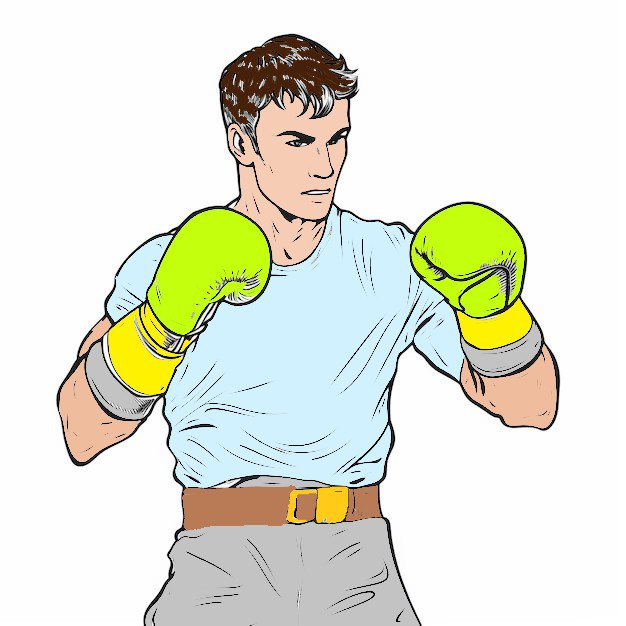
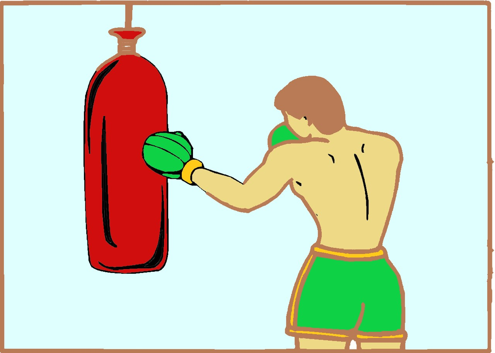
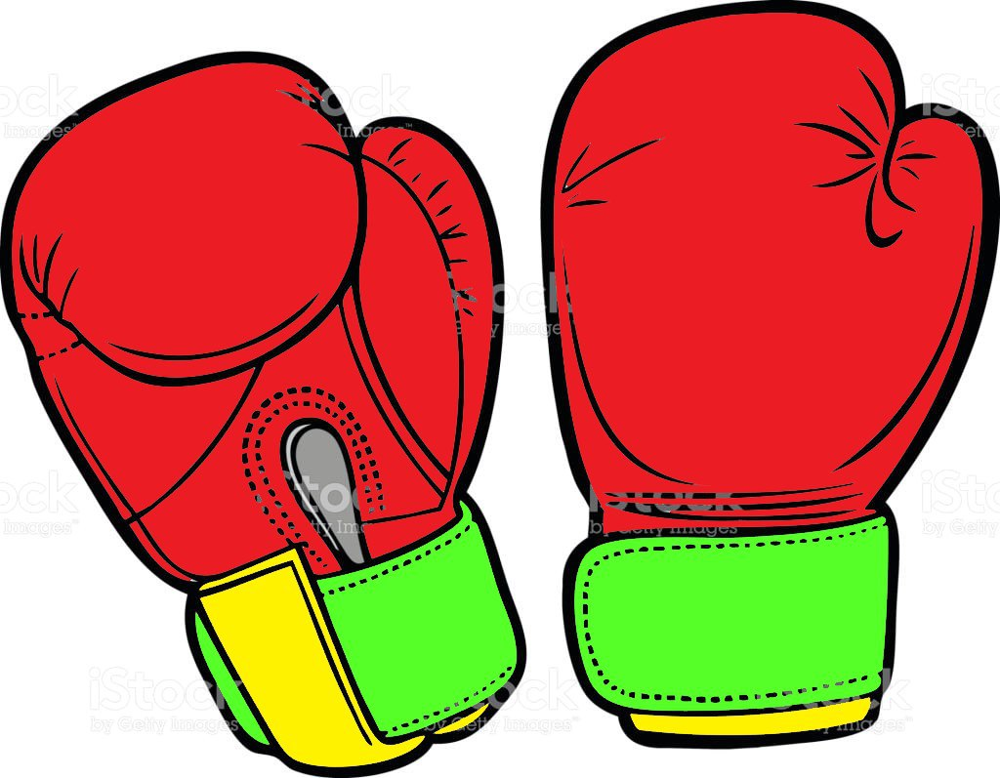

Віталій Кличко
Статистика
- Повне ім'я: Віталій Володимирович Кличко
- Прізвисько: Залізний Братик
- Вагова категорія: Важка вага
- Зріст: 201 см
- Розмах рук: 203 см
- Рекорд: 45-2 (41 KO)
- Поразки: Тільки через травми
Досягнення
- Чемпіон світу за версією WBC
- Чемпіон світу за версією WBO
- Чемпіон Європи за версією EBU
- 6-разовий чемпіон світу з кікбоксингу
- Чемпіон світу з тайського боксу
- Мер Києва (з 2014 року)
- Доктор наук з фізичного виховання і спорту
Біографія
Віталій Кличко народився 19 липня 1971 року в селі Беловодське, Киргизстан. Разом з молодшим братом Володимиром створив найуспішнішу братську пару в історії боксу.
Відомий своєю неймовірною витривалістю та силою удару. З 45 перемог 41 досягнуто нокаутом. Обидві поразки у кар'єрі сталися через травми - розрив м'язів плеча у бою з Крісом Бердом та травма коліна у бою з Ленноксом Льюїсом.
Після завершення боксерської кар'єри зайнявся політикою. З 2014 року обіймає посаду мера Києва. Активно займається благодійністю та розвитком спорту в Україні.
Цікаві факти
- Володів титулом WBC у важкій вазі впродовж 4 років
- Ніколи не був нокаутований у професійній кар'єрі
- Має чорний пояс по кікбоксингу
- Кандидат у президенти України у 2014 році
- Засновник благодійного фонду "Підтримай спорт в Україні"


